Module 19 · Bài báo hiện tại: Helstrom surrogate vật lý ràng buộc, từ nhãn đến kết quả
Từ quadrature oracle và Cholesky head đến kết quả (số huấn luyện tạm thời)
- Mô tả đường ống tham số kênh, trạng thái, \(P_e\)
- Giải thích Cholesky head và lớp Helstrom khả vi
- Tính nhãn bằng quadrature và kiểm tra hội tụ
- Đọc bảng kết quả và nhận ra giới hạn hiệu lực
- Chọn giữa surrogate, bảng tra, closed form và oracle
📚 Tài liệu nguồn của module (đã xác minh bằng nội dung từng file)
| File trong kho | Bài báo (đã xác minh bằng nội dung) | Trang | Trạng thái | Đã dùng vào module |
|---|---|---|---|---|
| main.pdf | Fast and Universal Helstrom Error Evaluation for Turbulent Quantum Free-Space Optical Channels via Physics-Constrained Neural Surrogates Truong T. N., Duong P. G., Tran D. H., Tran H., Nguyen V. D. · 2026 · Bản thảo (Overleaf), IEEEtran | 15 | Đã đọc, khớp tên bài | Đọc Mục IV đến VII, Fig. 3 đến 7, Table IV đến XII; số huấn luyện tạm thời. |
| ttn-12-08/EXPERIMENTS.md | Nhật ký các lần huấn luyện Truong T. N. · 2026 · repo ttn-12-08 | 0 | Đã đọc, khớp tên bài | Nhật ký đến 16/10/2026. |
| ttn-12-08/quadrature_baseline.py | Quadrature oracle Truong T. N. · 2026 · repo ttn-12-08 | 0 | Đã đọc, khớp tên bài | Chạy lại hội tụ \(n_w\) bằng numpy (data/verify/m19_verify.py). |
| ttn-12-08/model/*.py | Mã mô hình: heads, losses, feature_registry Truong T. N. · 2026 · repo ttn-12-08 | 0 | Đã đọc, khớp tên bài | Câu hỏi đọc code lấy từ đây. |
Bài giảng (slide)
Dùng phím ← → hoặc nút bấm; nút ⛶ để trình chiếu toàn màn hình.
Bài toán: Helstrom bound nhanh cho kênh FSO nhiễu loạn
- \(\rho_0,\rho_1\)ma trận mật độ nhận được dưới hai bit
- \(\lambda_k\)trị riêng của \(\tfrac12(\rho_1-\rho_0)\)
- \(\hat P_e\)dự đoán của surrogate
- \(114/0{,}018\)\(\approx6{,}3\times10^{3}\) lần nhanh hơn khi chạy theo lô
Hai trạng thái coherent và kênh có nhiễu
- \(\bar n=|\alpha|^2\)số photon trung bình
- \(e^{-4\bar n}\)độ chồng lấn bình phương
- \(I\)cường độ tương đối, \(\mathbb E[I]=1\)
- \(w\)nhiễu thu cộng Gauss
Kênh Gamma-Gamma và Rytov variance
- \(C_n^2\)độ mạnh nhiễu loạn khí quyển
- \(\sigma_R^{12/5}\)viết \((\sigma_R^2)^{6/5}\) trong code: luỹ thừa của \(\sigma_R^2\)
- \(\beta_{GG}\)công thức tương tự với 0,51; 0,69; 5/6
Ví dụ: \(\sigma_R^2=7\times10^{-5}\) cho \(\alpha_{GG}=2.915e+04\), \(\beta_{GG}=2.801e+04\) (tính lại, dạng chuẩn Andrews-Phillips).
Ma trận mật độ trung bình và đối xứng chẵn lẻ
- \(f_I\)mật độ Gamma-Gamma
- \(\phi_\sigma\)mật độ Gauss của nhiễu
- \(\Pi\)toán tử chẵn lẻ photon
Nếu lấy mẫu hai bit với CÙNG \(I\) và \(w\), đối xứng này đúng đến sai số máy; lấy mẫu độc lập thì chỉ đúng khi số mẫu rất lớn.
Bảng chi phí: SDP, oracle, closed form và surrogate
- \(M,d\)số giả thuyết, chiều Fock
- \(K=n_In_w=1968\)số nút cầu phương
| Phương pháp | ms/mẫu |
|---|---|
| SDP (CVXPY/SCS) | 114 |
| Quadrature oracle | 13,5 |
| Closed form, FP64 | 0,053 (phủ 11,6%) |
| Surrogate | 0,018 (lô) / 0,79 (từng mẫu) |
Với \(M=2\) phần SDP thừa: một lần phân rã trị riêng \(O(d^3)\) đã cho đáp án chính xác. SDP vẫn là điểm tham chiếu cho \(M\) bất kỳ.
Dòng thời gian bốn nhánh: từ Helstrom đến surrogate
Năm lấy từ references.bib của bản thảo (Helstrom 1969 và 1976, Holevo 1973, Al-Habash 2001, Eldar 2003, Uysal 2006, Barnett và Croke 2009, GradNorm 2018, Koutný 2022, Ma 2024, Bhatnagar 2025). Nét đứt: ảnh hưởng ý tưởng; nét liền: phụ thuộc trực tiếp.
Kiến trúc surrogate vật lý ràng buộc
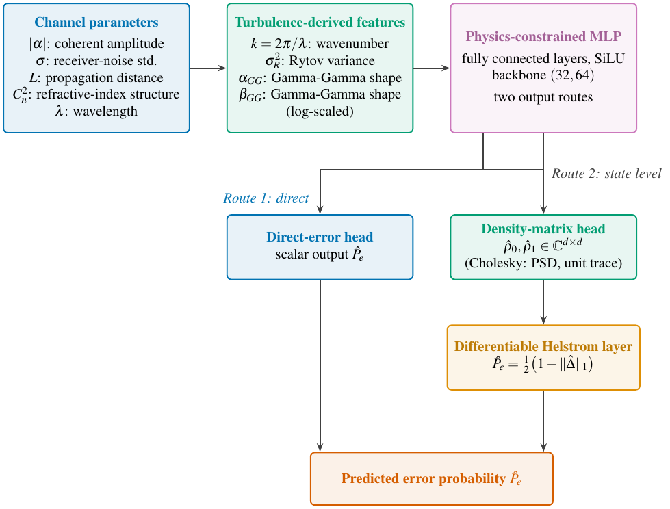
Nguồn: Bản thảo hiện tại (main.pdf, 15 trang), Fig. 3
- \(x\)vector đặc trưng đầu vào
Đặc trưng vật lý và chuỗi suy dẫn
- \(x_{\rm phys}\)9 đặc trưng, 7 có thông tin vì \(\lambda,k\) hằng số
- \(\log\)\(C_n^2,\sigma_R^2,\alpha_{GG},\beta_{GG}\) được lấy \(\log_{10}\)
| Tên trong code | Đặc trưng |
|---|---|
| BASE | alpha_abs, sigma_noise, distance_L, Cn2, wavelength_lambda |
| TURB | wave_number_k, rytov_variance, gamma_gamma_alpha, gamma_gamma_beta |
| slides9 | BASE + TURB |
Backbone nhỏ (32, 64) với SiLU
- \(\mathrm{SiLU}(u)\)\(u\,\sigma(u)\)
- \(2\times\)hai head \(\mathrm{Linear}(64\to d^2)\), \(d=16\)
Backbone lớn \((128,128,256,256)\) có 248192 tham số; bản thảo báo cáo nó không thu hẹp khoảng cách giữa hai bộ đặc trưng.
Cholesky density head: ma trận mật độ hợp lệ theo cấu tạo
- \(u\)đầu ra thô của \(\mathrm{Linear}\)
- \(\mathrm{softplus}\)\(\ln(1+e^{u})>0\)
Hai head riêng cho \(\rho_0,\rho_1\) nên chưa ép đối xứng \(\rho_1=\Pi\rho_0\Pi\); biến thể \(\mathtt{ParityCholeskyHead}\) làm việc đó và giảm nửa tham số nhưng chưa dùng làm mô hình chính.
Lớp Helstrom: tính, không học
- \(\lambda_j\)trị riêng từ \(\mathtt{eigvalsh}\)
- \(\operatorname{clip}\)chặn vào \([0,0{,}5]\) chống sai số hữu hạn
Lớp không có tham số huấn luyện nhưng cho gradient chảy ngược vào hai head. Gradient này không chứa \(1/(\lambda_i-\lambda_j)\) vì chỉ cần trị riêng, nên trị riêng 0 lặp lại của \(\hat\Delta\) hạng thấp không gây kỳ dị.
Loss: Frobenius trạng thái cộng sai số Helstrom
- \(\|\cdot\|_F\)chuẩn Frobenius
- \(P_{e,\rm ref}\)nhãn từ quadrature oracle
Quadrature oracle: nhãn tất định, không lấy mẫu
- \(n_I=48\)nút Gauss-Legendre theo \(\log I\)
- \(n_w=41\)nút Gauss-Hermite theo nhiễu
Số nút \(K=48\times41=1968\); nút dùng chung cho hai bit nên \(\rho_1=\Pi\rho_0\Pi\) giữ đúng đến sai số máy. Cửa sổ \(\log I\) co theo độ rộng của mật độ (\(\pm10\) độ lệch chuẩn) để không mất nút khi \(\alpha_{GG},\beta_{GG}\) lớn.
Tập dữ liệu phân tầng theo ô, stratified_v3
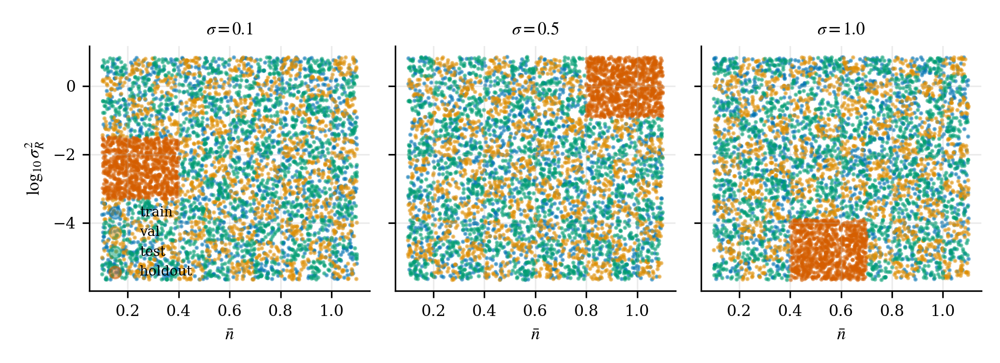
Nguồn: Bản thảo hiện tại (main.pdf, 15 trang), Fig. 4
- \(\bar n\in[0{,}1;1{,}1]\)10 bin rộng 0,1
- \(\log_{10}\sigma_R^2\in[-5{,}7;0{,}9]\)11 bin rộng 0,6
Ví dụ số: hội tụ của cầu phương nhiễu
- \(n_I=48,\ d=16\)\(\bar n=0{,}1,\ \sigma=1,\ \sigma_R^2=7\times10^{-5}\)
| \(n_w\) | \(P_e\) | \(\varepsilon\) (%) |
|---|---|---|
| 7 | 0.36084 | -6.24 |
| 15 | 0.38415 | -0.181 |
| 21 | 0.3848 | -0.0118 |
| 31 | 0.38484 | -7.67×10−5 |
| 41 | 0.38484 | 1.02×10−6 |
| 61 | 0.38484 | 0 |
Tính lại bằng \(\mathtt{quadrature\_baseline.py}\): \(n_w=7\) lệch 6.24%, từ \(n_w=31\) trở lên hội tụ. Nút bức xạ \(n_I=24,48,96\) cho cùng kết quả đến \(10^{-8}\).
Ví dụ số: cắt Fock d = 16 và vùng hợp lệ
- \(d=16\)chiều cắt của surrogate
- \(\bar n=\gamma^2\)số photon trung bình
| \(|\gamma|\) | \(\bar n\) | \(\tau\) |
|---|---|---|
| 2 | 4 | 4.89×10−6 |
| 3 | 9 | 0.022 |
| 4 | 16 | 0.533 |
Ví dụ số: từ đầu ra thô đến ma trận mật độ
- \(u_{11},u_{22},u_{21}\)\(0.5,\,-0.2,\,0.3\)
- \(T_{jj}\)\(\mathrm{softplus}(0.5)+10^{-5},\ \mathrm{softplus}(-0.2)+10^{-5}\)
Cả hai trị riêng dương dù đầu ra thô \(u_{22}=-0{,}2\) âm: chính \(\mathrm{softplus}\) trên đường chéo đảm bảo điều đó.
Ví dụ số: lớp Helstrom trên ma trận 2 nhân 2
- \(\Pi\)\(\mathrm{diag}(1,-1)\)
- \(\sum|\lambda|\)tổng giá trị tuyệt đối trị riêng
Kiểm tra bằng \(\mathtt{numpy.linalg.eigvalsh}\): \(\lambda=[-0.2, 0.2]\), \(P_e=0.30\). (minh hoạ, ma trận 2 nhân 2 tự đặt)
Bảng so sánh: surrogate, oracle, SDP và closed form
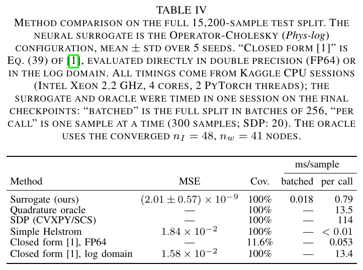
Nguồn: Bản thảo hiện tại (main.pdf, 15 trang), Table IV, tr. 9
- \(1{,}58\times10^{-2}\)MSE closed form log domain
- \(2{,}01\times10^{-9}\)MSE surrogate, 5 seed
Số liệu huấn luyện: tạm thời, đang huấn luyện lại trên stratified_v3.
Chi phí huấn luyện và điểm hoà vốn
- \(t_{\rm ref}\)114 ms (SDP) hoặc 13,5 ms (oracle)
- \(t_{\rm query}\)\(0{,}018\) ms
Ablation đặc trưng: đặc trưng vật lý quyết định độ chính xác
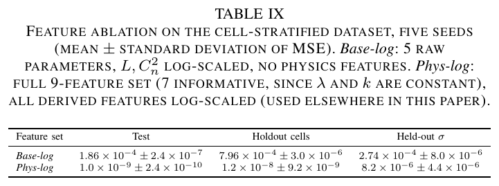
Nguồn: Bản thảo hiện tại (main.pdf, 15 trang), Table IX, tr. 12
- \(\text{Base-log}\)5 tham số thô, \(L,C_n^2\) lấy log
- \(\text{Phys-log}\)thêm \(k,\sigma_R^2,\alpha_{GG},\beta_{GG}\)
Cả năm seed Base-log dừng bởi patience sau 6100 đến 6400 epoch với MSE train xấp xỉ MSE val (\(1{,}86\times10^{-4}\)): đây là underfit do biểu diễn, không phải overfit.
Số liệu huấn luyện: tạm thời, đang huấn luyện lại trên stratified_v3.
Hợp lệ vật lý của ma trận mật độ dự đoán
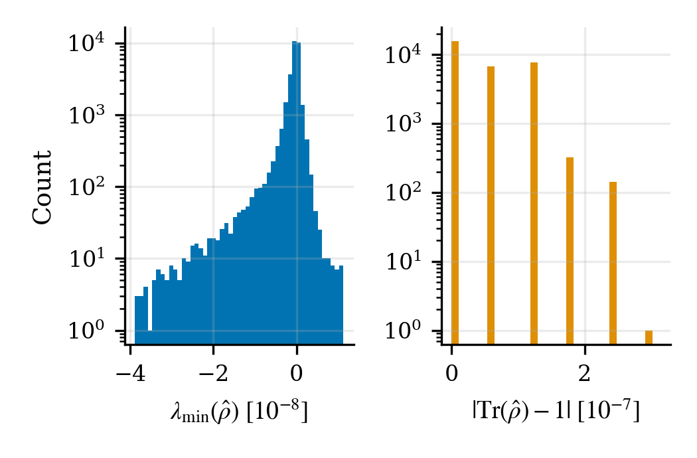
Nguồn: Bản thảo hiện tại (main.pdf, 15 trang), Fig. 6, tr. 12
- \(\lambda_{\min}\)trị riêng nhỏ nhất, thấp nhất \(-1{,}3\times10^{-7}\)
Phần âm nhỏ xíu phù hợp với làm tròn float32, không phải vi phạm PSD thật. Head raw-plain vi phạm cả ba tính chất.
Số liệu huấn luyện: tạm thời, đang huấn luyện lại trên stratified_v3.
Bẫy nhãn chưa hội tụ ở nhiễu lớn
- \(P_e^{\rm label}\)\(n_w=7\)
- \(P_e^{\rm conv}\)\(n_w=61\)
Nhãn lưu khớp trị riêng của \(\rho\) float32 (lệch tối đa \(2\times10^{-8}\)), không mẫu trùng giữa các split, nhưng cầu phương nhiễu \(n_w=7\) chưa hội tụ ở \(\sigma=1\). Tính lại 127.760 nhãn mất 82 s trên laptop; \(n_I=48\), \(n_w=41\), \(d=16\) giữ nguyên.
Closed form Eq. (39): độ phủ và độ chính xác
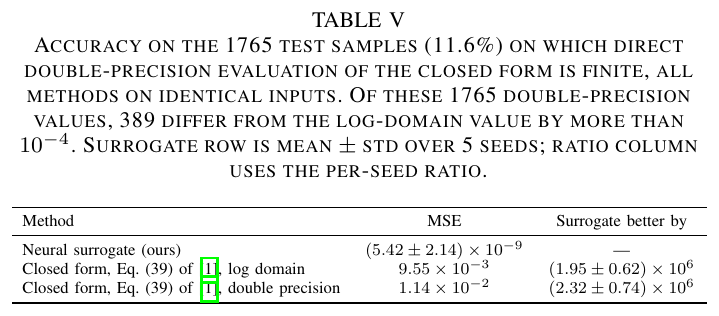
Nguồn: Bản thảo hiện tại (main.pdf, 15 trang), Table V, tr. 10
- \(\text{FP64}\)đánh giá trực tiếp bằng double precision
Số liệu huấn luyện: tạm thời, đang huấn luyện lại trên stratified_v3.
Sai số theo chế độ nhiễu loạn
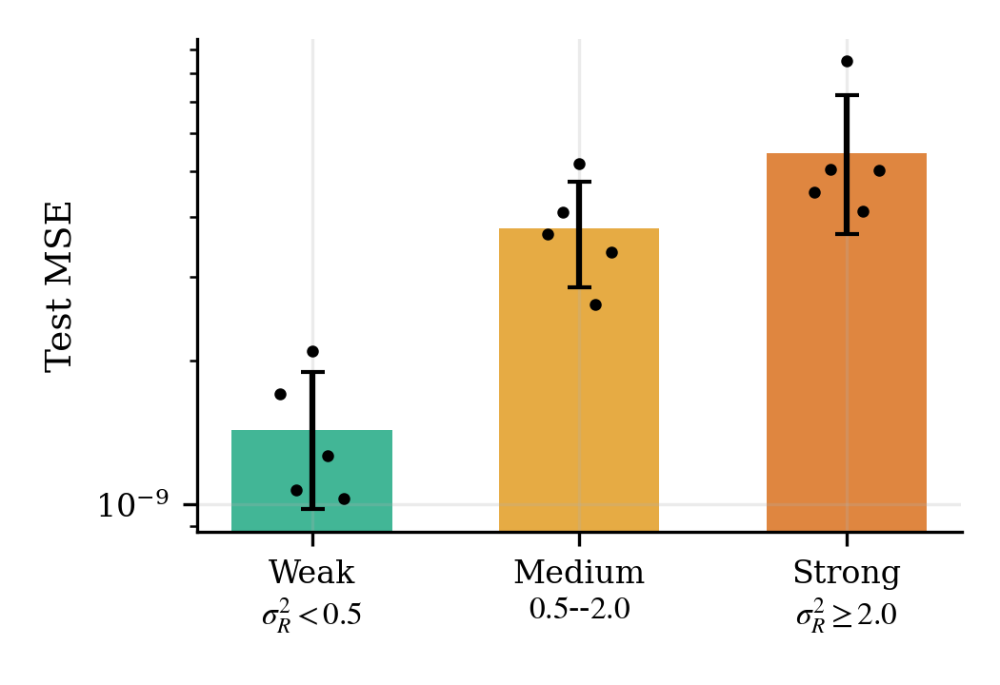
Nguồn: Bản thảo hiện tại (main.pdf, 15 trang), Fig. 7, tr. 12
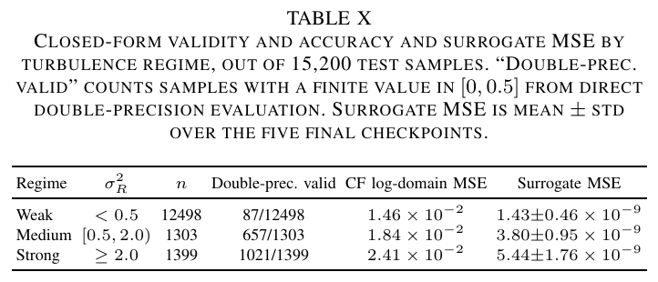
Nguồn: Bản thảo hiện tại (main.pdf, 15 trang), Table X, tr. 12
Hold-out ô và hold-out mức nhiễu
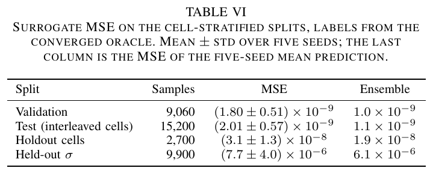
Nguồn: Bản thảo hiện tại (main.pdf, 15 trang), Table VI, tr. 10
- \(\sigma\)chỉ huấn luyện ở 0,1; 0,5; 1,0
Số liệu huấn luyện: tạm thời, đang huấn luyện lại trên stratified_v3.
Probe ngoài vùng huấn luyện: surrogate thua khi \(\bar n\ge3\)
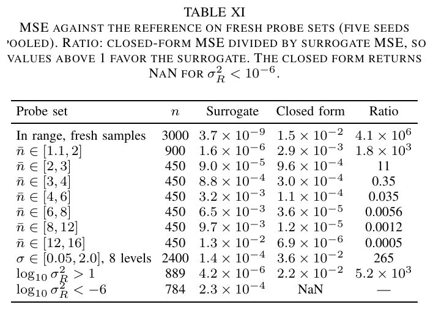
Nguồn: Bản thảo hiện tại (main.pdf, 15 trang), Table XI, tr. 13
Baseline bảng tra: đối thủ mạnh nhất
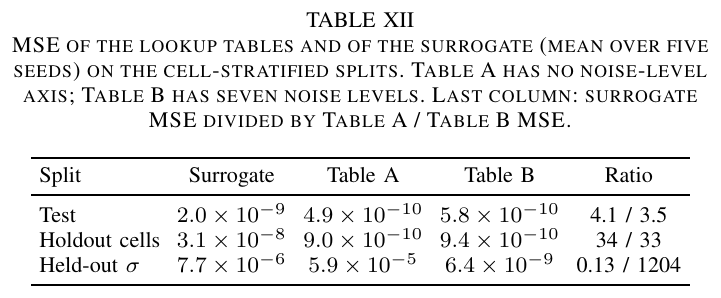
Nguồn: Bản thảo hiện tại (main.pdf, 15 trang), Table XII, tr. 13
- \(G\)số điểm lưới, tăng theo luỹ thừa số đầu vào
Số liệu huấn luyện: tạm thời, đang huấn luyện lại trên stratified_v3.
Phần dư đối xứng chẵn lẻ và cấu trúc sai số
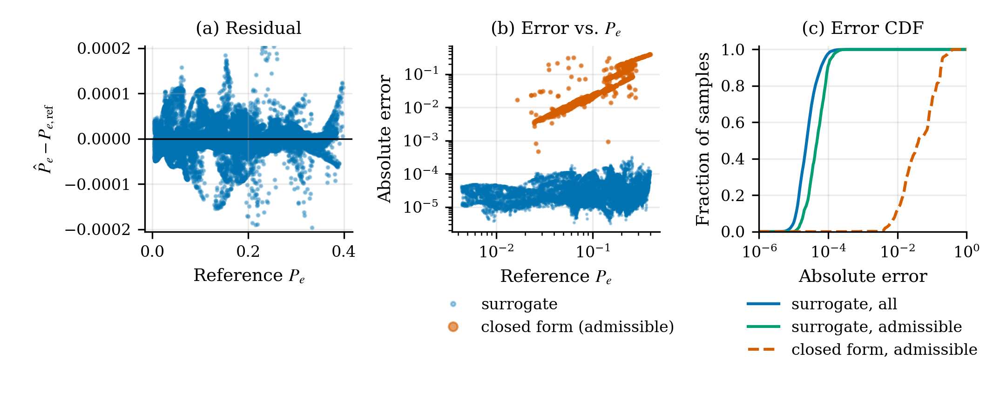
Nguồn: Bản thảo hiện tại (main.pdf, 15 trang), Fig. 5, tr. 11
- \(E_\Pi\)chẩn đoán, không phải số hạng phạt
Sàn nhiễu nhãn khoảng \(10^{-16}\), nên hai head độc lập vẫn chưa học đúng đối xứng; head parity một nhánh sẽ loại bỏ phần dư này theo cấu tạo.
Số liệu huấn luyện: tạm thời, đang huấn luyện lại trên stratified_v3.
Ứng dụng: quét thiết kế liên kết FSO lượng tử
- \(|\mathcal G|\)số tổ hợp tham số
- \(t_{\rm query}\)thời gian một truy vấn
Cùng lưới ấy với oracle hội tụ mất \(24\) phút. (minh hoạ, lưới tự đặt, thời gian lấy từ Table IV)
Bảng chọn phương pháp theo vùng làm việc
| Tình huống | Phương pháp nên dùng | Lý do |
|---|---|---|
| \(\bar n\le1{,}1\), ba mức \(\sigma\), cần quét lô lớn | Surrogate hoặc bảng tra | Nhanh, MSE khoảng \(10^{-9}\) |
| \(\sigma\) liên tục, nhiều đầu vào | Surrogate | Bảng tra phình theo luỹ thừa |
| \(\bar n\ge3\), xác suất lỗi cực nhỏ | Closed form hoặc oracle \(d\) lớn | Cắt \(d=16\) không biểu diễn nổi |
| Cần nhãn chuẩn | Quadrature oracle \(48\times41\) | Đã hội tụ, 13,5 ms |
Dòng thời gian dự án ba nhánh, tháng 8 đến 10/2026
Trục: số tuần kể từ 1/8/2026; ngày lấy từ nhật ký ttn-12-08/EXPERIMENTS.md (ngày 3/9 từ mục Learnability). Nét liền: phụ thuộc trực tiếp; nét đứt: ảnh hưởng.
Hướng phát triển: parity head, Fock thích nghi, cảnh báo ngoài vùng
- \(\mathtt{ParityCholeskyHead}\)đã cài, chưa dùng làm chính
- \(d\)chiều dùng để gán nhãn probe
- Mức nhiễu liên tục và nhiều bước sóng: nơi bảng tra không còn khả thi.
- Cờ phát hiện ngoài vùng: kiểm tra khoảng giá trị và độ bất đồng ensemble.
- Hoàn tất huấn luyện tới patience và cập nhật mọi số tạm thời.
Tổng kết: học phần chưa biết, tính phần đã biết
| Kết luận | Số liệu |
|---|---|
| Surrogate so với closed form (log), MSE test | \((2{,}01\pm0{,}57)\times10^{-9}\) vs \(1{,}58\times10^{-2}\) |
| Tốc độ theo lô so với SDP | \(0{,}018\) ms vs \(114\) ms |
| Ablation đặc trưng (test) | \(1{,}86\times10^{-4}\to1{,}0\times10^{-9}\) |
| Vùng hợp lệ | \(\bar n\le1{,}1\), \(\sigma\in\{0{,}1;0{,}5;1{,}0\}\) |
Số liệu huấn luyện: tạm thời, đang huấn luyện lại trên stratified_v3.
Nội dung chi tiết
Bối cảnh lý thuyết và lịch sử
Helstrom (1969, 1976) cho lỗi tối thiểu của phân biệt hai trạng thái lượng tử; Holevo (1973) và Eldar, Megretski, Verghese (2003) đưa bài toán về tối ưu hoá POVM và SDP. Kênh nhiễu loạn dùng mô hình Gamma-Gamma (Al-Habash 2001, Andrews và Phillips 2005). Bhatnagar, Arti và Bhatnagar (2025) cho công thức đóng Eq. (39). Bài hiện tại thay chuỗi nhãn đắt tiền bằng một surrogate: tham số kênh vào, ma trận mật độ hợp lệ ra, lớp Helstrom tính \(P_e\).
Nói nôm na, kỹ thuật, bảng, phép tính
Nôm na: hỏi một đường laser qua trời rối sai bao nhiêu; giải đúng chậm, nên dạy mạng đoán nhưng buộc nó đoán bằng ma trận hợp lệ. Kỹ thuật: \(x\mapsto\hat\rho_{0,1}\mapsto\hat P_e\) với Cholesky head và lớp Helstrom. Bảng: slide "Bảng so sánh". Phép tính: các ví dụ dưới.
\(\bar n=0{,}5\): \(e^{-4\bar n}=e^{-2}=0.1353\), \(P_e=\tfrac12(1-\sqrt{1-0.1353})=0.03506\). Đây là cận dưới của mọi máy thu khi chưa có nhiễu loạn.
\(C_n^2=5\cdot10^{-14}\), \(\lambda=1{,}55\,\mu\)m, \(L=1200\) m: \(k=4.054×106\) m\(^{-1}\), \(\sigma_R^2=1{,}23\,C_n^2k^{7/6}L^{11/6}=1.391\): nhiễu loạn mạnh vừa; ban đêm trời quang \(C_n^2\) nhỏ hơn hàng chục lần.
Đầu ra thô \((0{,}5;-0{,}2;0{,}3)\) cho \(\operatorname{Tr}(TT^\top)=1.3966\), \(\hat\rho=\begin{pmatrix}0.6794&0.2092\\0.2092&0.3206\end{pmatrix}\), trị riêng \(0.2244\) và \(0.7756\): hợp lệ dù \(u_{22}\lt0\).
Với \(\rho_0,\rho_1\) ở slide ví dụ, \(\hat\Delta\) có trị riêng \(\pm0{,}2\), \(\|\hat\Delta\|_1=0{,}4\), \(P_e=0{,}30\): bộ thu tối ưu vẫn sai 3 trên 10 bit. (minh hoạ)
Lưới \(40\cdot3\cdot30\cdot30=108000\) điểm: SDP \(3.4\) h, oracle \(24\) phút, surrogate theo lô \(1.9\) s. (giả định: lưới tự đặt)
\(T=1{,}1\times10^5\) s, \(t_{\rm SDP}-t_{\rm query}=0{,}114\) s: \(N^*=9.65\times10^{5}\approx10^6\) truy vấn. Dưới ngưỡng này gọi thẳng oracle rẻ hơn.
Mục V-C ghi rằng bốn vòng resume (khoảng 10.000 epoch) của Phys-log chưa seed nào chạm patience, MSE test nằm trong \(0{,}8\) đến \(1{,}3\times10^{-9}\) và còn giảm chậm; các bảng chính vì vậy chưa phải giá trị hội tụ.
Bẫy khi làm bài
- Nhầm \(|\alpha|\) và \(|\alpha|^2=\bar n\) trong \(e^{-4|\alpha|^2}\).
- Quên \(\tfrac12\) trong \(\hat\Delta=\tfrac12(\hat\rho_1-\hat\rho_0)\) làm \(P_e\) âm hoặc sai.
- Báo MSE nhỏ nhưng nhãn chưa hội tụ.
- Báo MSE chỉ trên phần mẫu mà closed form hữu hạn.
- Dùng surrogate ngoài \(\bar n\le1{,}1\) hoặc ngoài ba mức \(\sigma\).
Tự kiểm tra nhanh
Luyện tập sâu
Mở ngân hàng 45 câu trắc nghiệm và 5 bài viết code →
Tài liệu tham khảo
- C. W. Helstrom, Quantum detection and estimation theory, J. Stat. Phys. 1(2), 231-252, 1969.
- M. R. Bhatnagar, M. K. Arti, K. Bhatnagar, Quantum Relay-Assisted Free-Space Optical Communication, IEEE Photonics J. 17(3), 2000215, 2025.
- A. Al-Habash, L. C. Andrews, R. L. Phillips, Opt. Eng. 40(8), 1554, 2001.
- Y. C. Eldar, A. Megretski, G. C. Verghese, Designing optimal quantum detectors via semidefinite programming, IEEE Trans. Inf. Theory 49, 2003.
- Z. Chen et al., GradNorm, ICML 2018.
- D. Koutný et al., Neural-network quantum state tomography, Phys. Rev. Research 4, 2022.